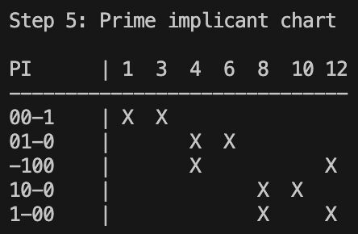
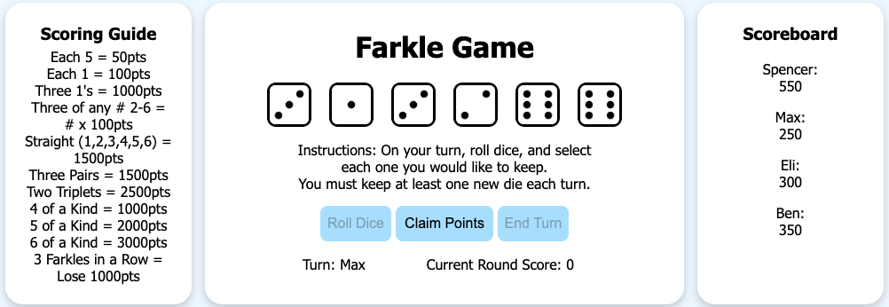

DevOps Internship at DataServ
Description:
During the summer of 2026, I completed an internship at DataServ where I
gained experience working with software and databases in a production
environment. I gained experience using SQL Server, MongoDB, Git,
Bitbucket, Jira, and JAMS Job Scheduler, as well as proprietary internal
company tooling. Some of the things I worked on included rolling out new
analytics dashboards, database maintenance and efficiency improvement
tasks, and improvements to other internal systems. This internship gave me
experience working in a corporate environment and collaborating with other
developers. It also helped me understand the software development
lifecycle and how it works integrated into an existing development
environment.
Reflection:
My internship at DataServ was a great first experience to gain entry into the
software development world. One of the biggest things I learned was how
software features are planned and scoped out. Specifically, Scrum
methodologies were a great learning experience to gain a greater
understanding of a real development environment. I also gained great
experience with databases and version control with Git. Overall this was a
great experience as my first internship that gave me lots of experience and
new knowledge.
Quine-McCluskey Boolean Minimizer with Visualization Project

Description:
The Quine-McCluskey Boolean Minimizer is a personal project I developed in
C, which is a command line program that simplifies Boolean expressions
using the Quine-McCluskey algorithm. The program takes minterms through
command line arguments, conducts the algorithm on the minterms
visualizing each step of the process in the terminal, and outputs the final
result. I originally learned how to do this algorithm by hand in my digital logic
systems class, and I decided to grow my algorithm experience through
programming this on my own in C. I worked with low level programming
languages through this project to solidify my memory management
experience.
Reflection:
Creating this program was really good in helping me develop my algorithmic
thinking skills and helping me translate an algorithm into code. I had not
learned how to compute this programmatically before, only manually by
hand, and this really challenged my way of thinking and translating
something I had previously only done on paper into code.
Farkle Dice Game

Description:
The Farkle Dice Game is a common dice game that I turned into a web app
game using HTML, CSS, and JavaScript. Similar to the Quine-McCluskey
project, before I made this I had only played this game with physical dice and
keeping a score sheet, so I wanted to challenge myself and figure out the
best way to translate this from game logic into code. There were challenges
involved because there is a lot more logic to a game like this than one might
think just from playing it, but it was completed primarily as my entry into the
web development environment; specifically as a way to get my start in
JavaScript. By the end of this project a fully functioning dice game gone
digital was the result!
Reflection:
Building the Farkle dice game project as a simple web app was really
beneficial for me because it was my first entry into web development, and
allowed a means for me to connect my programming knowledge with a GUI
in the browser for the first time. It grew my ability to implement game logic in
a program and grew my overall software development skills.